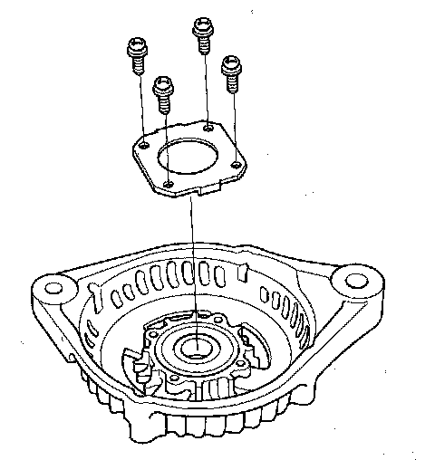

Overhaul
Alternator Overhaul
Special Tools Required
- Handle driver 07749-0010000
- Attachment, 42 x 47 mm 07746-0010300
NOTE: Refer to the Exploded View as needed during this procedure.
Alternator Disassembly
1. Test the alternator and regulator before you remove them.
2. Remove the alternator.
3. If the front bearing needs replacing, remove the pulley locknut with a 10 mm wrench (A) and a 22 mm wrench (B). If necessary, use an impact wrench.
4. Remove the three flange nuts.
5. Remove the end cover (A) and the insulator (B).
6. Remove the brush holder.
7. Remove the four bolts, then remove the rear housing assembly (A) and washer (B).
8. If you are not replacing the front bearing, go to step 13. Remove the rotor from the drive end housing.
9. Inspect the rotor shaft for scoring, and inspect the bearing journal surface in the drive end housing for seizure marks.
- If the rotor is damaged, replace the rotor assembly.
- If the rotor is OK, go to step 10.

10. Remove the front bearing retainer plate.
11. Drive out the front bearing with a brass drift and hammer.
12. With a hammer, driver handle, and attachment, install a new front bearing in the drive end housing.
Alternator Brush Inspection
13. Measure the length of both brushes (A) with a vernier caliper (B).
- If either brush is shorter than the service limit, replace the brush holder assembly.
- If the brush length is OK, go to step 14.
Rotor Slip Ring Test
14. Check for continuity between the slip rings (A).
- If there is continuity, go to step 15.
- If there is no continuity, replace the rotor assembly.
15. Check for continuity between each slip ring and the rotor (B) and the rotor shaft (C).
- If there is no continuity, replace the rear housing assembly, and go to step 16.
- If there is continuity, replace the rotor assembly.
16. Assemble the alternator in the reverse order of disassembly, and note these items:
- Be careful not to get any grease or oil on the slip rings.
- If you removed the pulley, tighten its locknut to 110 N.m (11.2 kgf.m, 81.0 lbf.ft) when you reinstall it.